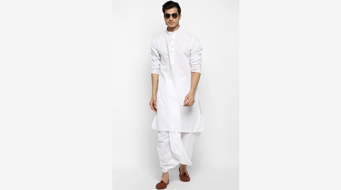

Dhoti - Kurta
At the very heart of traditional men’s dress in Jharkhand is the simplest combination: dhoti and kurta. Dhoti is a rectangular piece of unstitched cloth, and it is wound around the waist and then held in position by a knot. The kurta is a long tunic worn on the upper body. Such a simple ganna speaks of the simplicity of life in Jharkhand. Typically cotton or silk, the ganna is comfortable to wear in the tropical climatic condition of Jharkhand but maintains a mannered look.